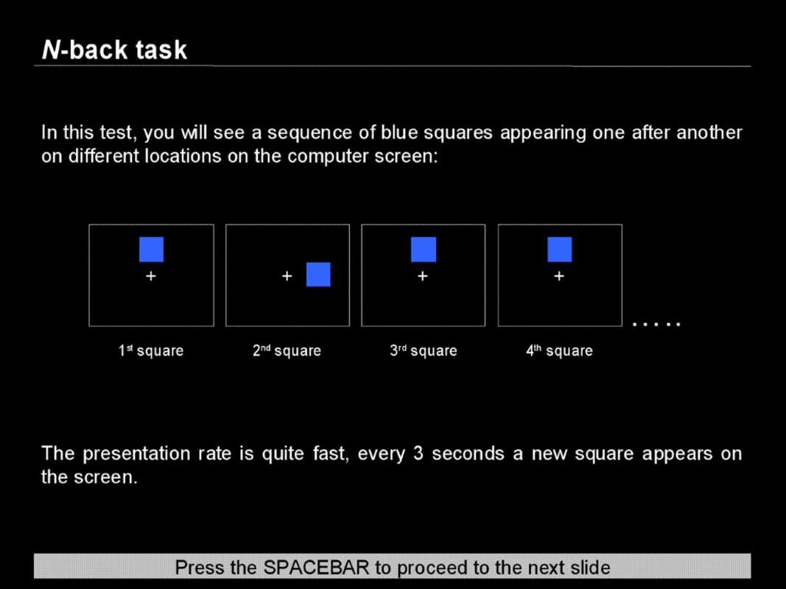
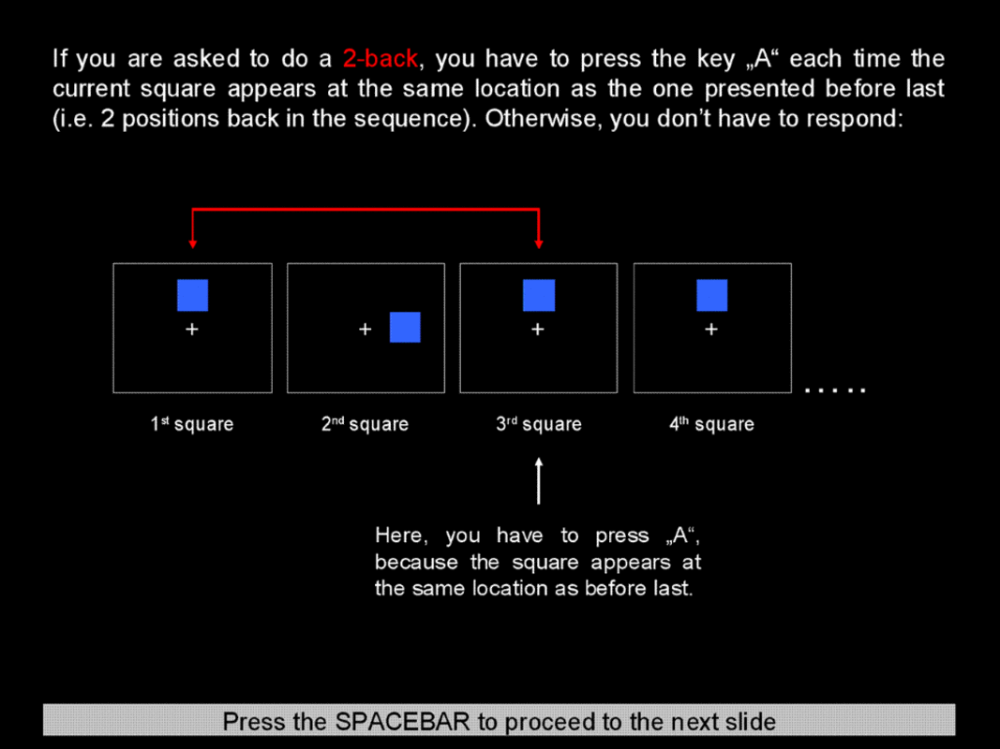
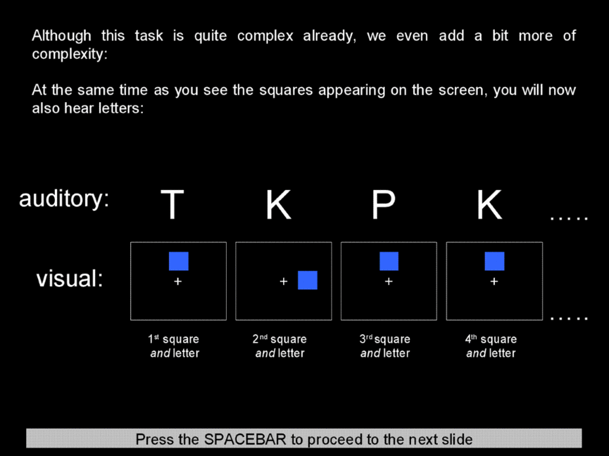
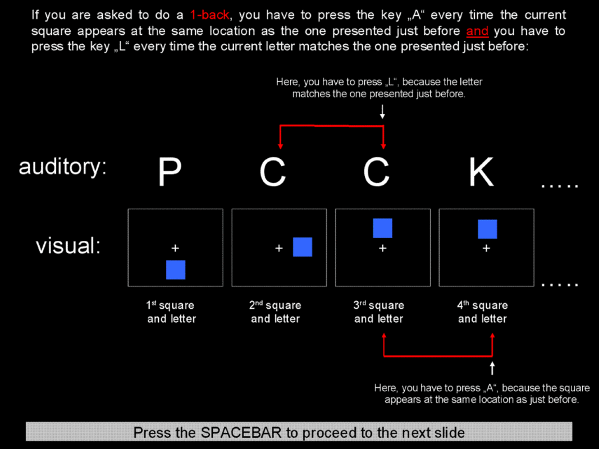
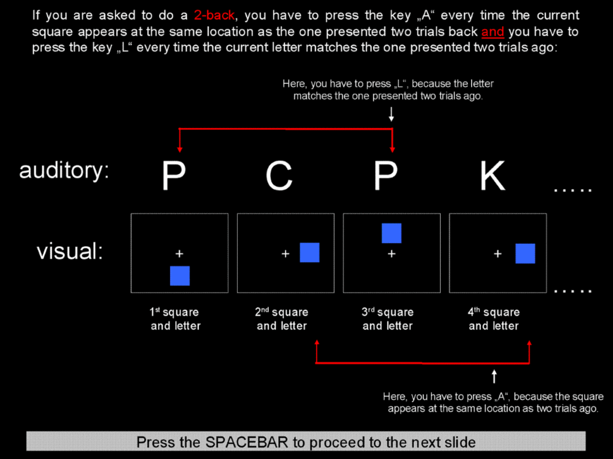
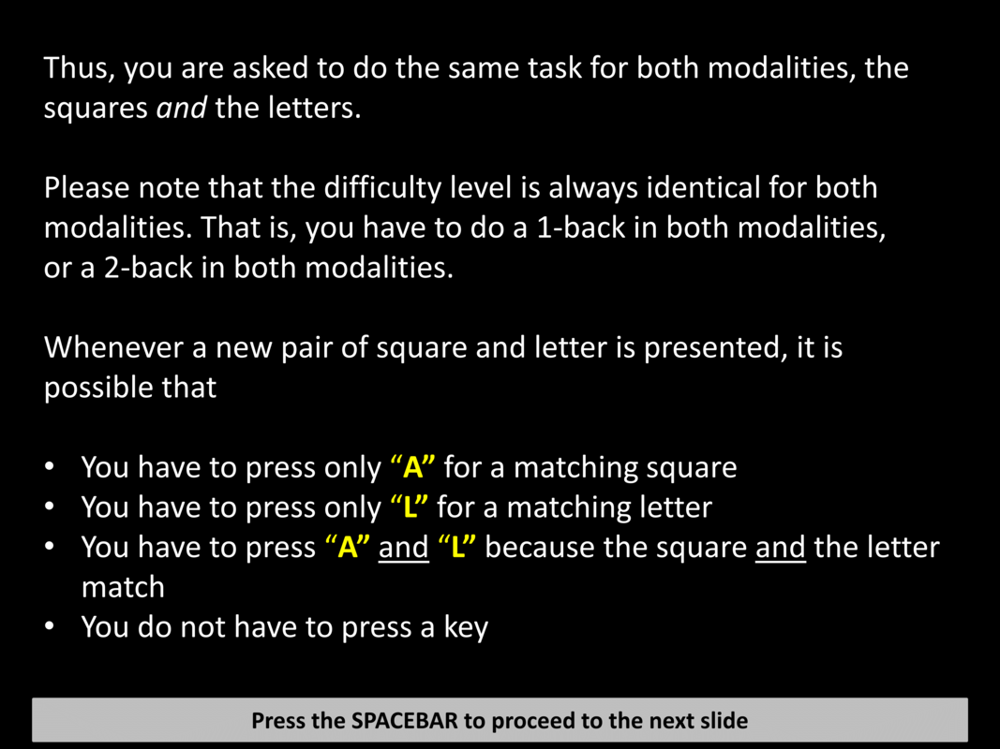
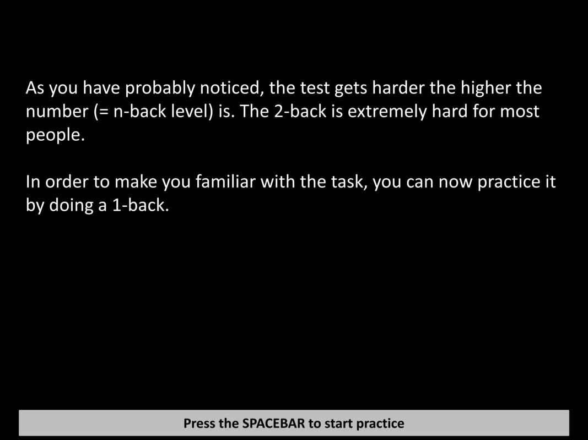
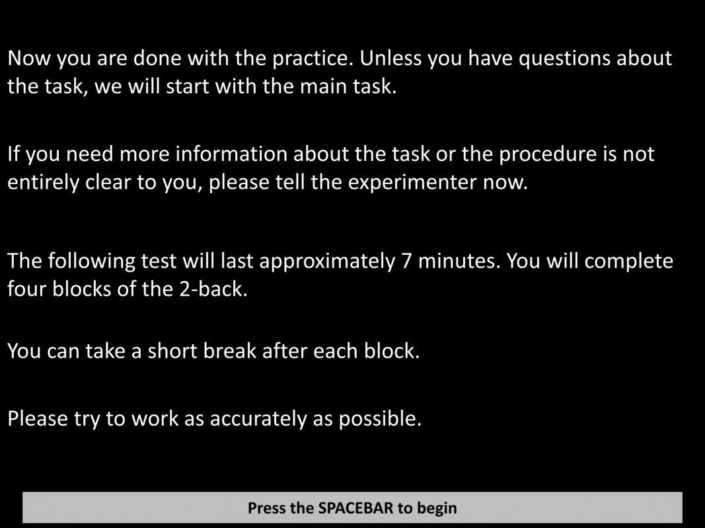
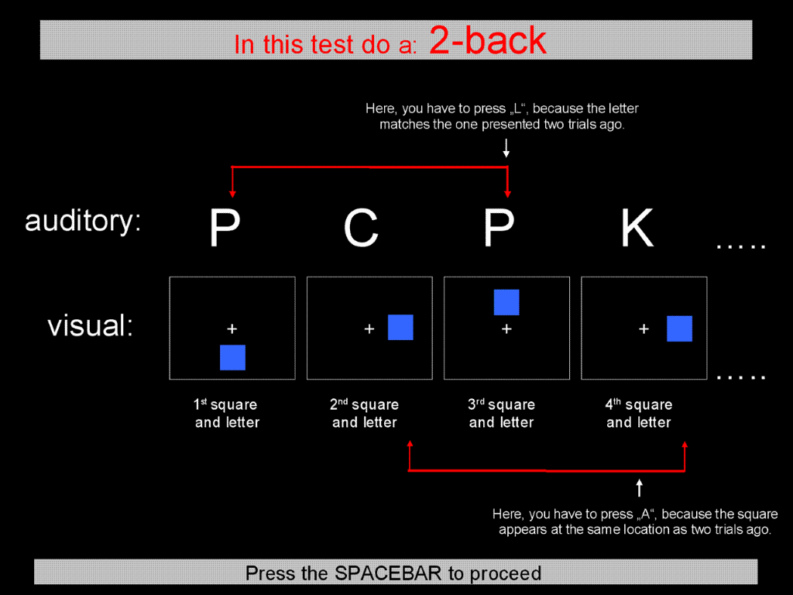

<!DOCTYPE html>
<html>
  <head>
    <title>Dual N-Back</title>
    <script src="https://ajax.googleapis.com/ajax/libs/jquery/1.11.1/jquery.min.js"></script>
    <script src="jspsych-5.0.2/jspsych.js"></script>
    <script src="jspsych-5.0.2/plugins/jspsych-text.js"></script>
    <script src="jspsych-5.0.2/plugins/jspsych-multi-stim-multi-response.js"></script>
    <script src="jspsych-5.0.2/plugins/jspsych-single-stim.js"></script>
    <script src="jspsych-5.0.2/plugins/jspsych-call-function.js"></script>
    <script src="jspsych-5.0.2/plugins/jspsych-instructions.js"></script>
    <link href="jspsych-5.0.2/css/jspsych.css" rel="stylesheet" type="text/css">
    <style>
      #image-grid {
        width: 450px;
        margin-left: auto;
        margin-right: auto;
      }

      #image-grid td {
        width: 150px;
        height: 150px;
      }

      #image-grid tr {
        height: 150px;
      }

      #image-grid img {
        width: 100%;
        height: auto;
      }

      #trial-audio {
        display: none;
      }

      body {
        color: white;
        background-color: black;
      }
    </style>
  </head>
  <body>
    <div id="jspsych-target"></div>
    <script>
      /*
       * This uses jsPsych 5, so there are some differences from the older experiments.
       * See the online documentation for details: http://docs.jspsych.org
       */

      var folder = "dual_n_back_stimuli/";
      var defaultITI = 500;
      var NUM_NON_TARGETS = 10;
      var NUM_TARGETS_SINGLE = 4;
      var NUM_TARGETS_BOTH = 2;

      var audio_h_tally = 0; //for final tally of auditory hits
      var visual_h_tally = 0; //for final tally of visual hits
      var audio_fa_tally = 0; //for final tally of auditory false alarms
      var visual_fa_tally = 0; //for final tally of visual false alarms

      var TOTAL_PER_BLOCK = NUM_NON_TARGETS + 2 * NUM_TARGETS_SINGLE + NUM_TARGETS_BOTH;
      var subjectID;
      var timeline = [];

      var timestamp = Date.now();
      var inherited_id = jsPsych.data.getURLVariable('id');
      var session = jsPsych.data.getURLVariable('session');
      if (inherited_id == undefined) {
        inherited_id = timestamp;
      }


      jsPsych.data.addProperties({subject: inherited_id, timestamp: timestamp, session: session});

      var audioFilenames = ['1.wav', '2.wav', '3.wav', '4.wav', '5.wav', '6.wav', '7.wav', '8.wav'];
      var audioFilepaths = [];
      for (var i = 0; i < audioFilenames.length; i++) {
        audioFilepaths.push(folder + audioFilenames[i]);
      }

      var gridTemplate = [];
      for (var i = 0; i < 9; i++) {
        gridTemplate.push('<td></td>');
      }
      gridTemplate[4] = '<td></td>';
      var grids = [];
      var idx;
      var grid;
      for (var i = 0; i < 8; i++) {
        idx = i;
        if (idx >= 4) {
          idx += 1;
        }
        grid = gridTemplate.slice();
        grid[idx] = '<td></td>';
        grids.push('<table id="image-grid"><tr>' + grid.slice(0, 3).join('') + '</tr><tr>' + grid.slice(3, 6).join('') + '</tr><tr>' + grid.slice(6, 9).join('') + '</tr></table>');
      }


      /*
       * Randomly determines whether or not to use targets based on an array
       * of counters.
       * Returns true or false.
       */
      function targetType(counters) {
        var maxInt;
        var cumulative = [];
        var curr;
        var prev = 0;
        for (var i = 0; i < counters.length; i++) {
          curr = counters[i] + prev;
          cumulative.push(curr);
          prev = curr;
        }
        maxInt = curr;
        var randInt = Math.floor(Math.random() * maxInt);
        for (var i = 0; i < cumulative.length; i++) {
          if (randInt < cumulative[i]) {
            return i;
          }
        }
      }


      /*
       * Returns one random stimulus with replacement.
       */
      function getSample(stimList) {
        return jsPsych.randomization.sample(stimList, 1, true)[0];
      }


      /*
       * Returns an array of stimuli based on load factor n.
       */
      function generateStimuli(n) {
        var audioStimuli = [];
        var visualStimuli = [];
        var category;
        var counters = [NUM_NON_TARGETS, NUM_TARGETS_SINGLE, NUM_TARGETS_SINGLE, NUM_TARGETS_BOTH];  // [neither, audio, visual, both]
        var audioTarget;
        var visualTarget;
        var audioSample;
        var visualSample;

        for (var i = 0; i < TOTAL_PER_BLOCK; i++) {  //
          if (i < n) {
            audioStimuli.push(getSample(audioFilepaths));
            visualStimuli.push(getSample(grids));
            counters[0] -= 1;
          } else {
            audioTarget = audioStimuli[i-n];
            audioSample = audioTarget;
            visualTarget = visualStimuli[i-n];
            visualSample = visualTarget;
            category = targetType(counters);
            if (category === 0 || category === 2) {
              while (audioSample === audioTarget) {
                audioSample = getSample(audioFilepaths);
              }
            }
            if (category === 0 || category === 1) {
              while (visualSample === visualTarget) {
                visualSample = getSample(grids);
              }
            }
            audioStimuli.push(audioSample);
            visualStimuli.push(visualSample);
            counters[category] -= 1;
          }
        }

        return {audio: audioStimuli, visual: visualStimuli};
      }


      /*
       * Appends a number of audio trials equal to TOTAL_PER_BLOCK based on
       * load factor n.
       */

      function addTrials(n) {
        var trialLength = 3500;

        var stimuli = generateStimuli(n);
        var audioStimulus;
        var visualStimulus;
        var trialStimuli;
        var nBeforeAudio;
        var hasTargetAudio;
        var nBeforeVisual;
        var hasTargetVisual;

        for (var i = 0; i < TOTAL_PER_BLOCK; i++) {
          audioStimulus = stimuli.audio[i];
          visualStimulus = stimuli.visual[i];
          trialStimuli = visualStimulus + '<audio id="trial-audio" autoplay="true" src="' + audioStimulus + '">';
          nBeforeAudio = stimuli.audio[i-n];
          hasTargetAudio = (audioStimulus === nBeforeAudio) ? 1 : 0;
          nBeforeVisual = stimuli.visual[i-n];
          hasTargetVisual = (visualStimulus === nBeforeVisual) ? 1 : 0;

          var trial = {
            type: "multi-stim-multi-response",
            stimuli: [trialStimuli],
            is_html: true,
            timing_stim: trialLength,
            timing_response: trialLength,
            choices: [["l"], ["a"]],  // keycodes
            response_ends_trial: false,
            timing_post_trial: 0,
            data: {
              n: n,
              has_target_audio: hasTargetAudio,
              has_target_visual: hasTargetVisual
            },
            on_finish: function (trialData) {
              var rts = JSON.parse(trialData.rt);
              var rtAudio = rts[0];
              var rtVisual = rts[1];
              var audio_hit = (rtAudio > -1 && trialData.has_target_audio == 1 ? 1 : 0);
              var visual_hit = (rtVisual > -1 && trialData.has_target_visual == 1 ? 1 : 0);
              var audio_fa = (rtAudio > -1 && trialData.has_target_audio == 0 ? 1 : 0);
              var visual_fa = (rtVisual > -1 && trialData.has_target_visual == 0 ? 1 : 0);
              if(trialData.n > 1){
                audio_h_tally += audio_hit;
                visual_h_tally += visual_hit;
                audio_fa_tally += audio_fa;
                visual_fa_tally += visual_fa;
              }

              var extraData = {
                rt_audio: rtAudio,
                rt_visual: rtVisual,
                responded_to_audio: (rtAudio > -1 ? 1 : 0),
                responded_to_visual: (rtVisual > -1 ? 1 : 0),
                audio_hit: audio_hit,
                visual_hit: visual_hit,
                audio_fa: audio_fa,
                visual_fa: visual_fa
              };
              jsPsych.data.addDataToLastTrial(extraData);

            }
          };

          timeline.push(trial);
        }
      }


      /*
       * Add experiment blocks as needed here
       */

       var instruct_gen = {
        type: "instructions",
        pages:[
          "",
          "",
          "",
          "",
          "",
          "",
          "",
          "",
          ""
        ],
        allow_backward: false,
        timing_post_trial: defaultITI,
       }

       var instr1Back = {
         type: "text",
         text: '<p>On the next screen you will complete the <b>1-back</b> practice task</p><p>Remember to press "A" on the keyboard whenever the current square location matches the one presented one position previously - i.e., an exact repeat of the previous location.</p>'+
               '<p>Press "L" on the keyboard whenever the current spoken letter matches the letter spoken one position previously - i.e., an exact repeat of the previous letter.</p>'+
               '<p>If both match, press both "A" and "L".</p>'+
               '<p>If neither match, do not press anything.</p>'+
               '<p>(press spacebar to begin!)</p>',
         timing_post_trial: defaultITI,
         cont_key: ['spacebar']
       };


       var instruct_gen2 = {
        type: "instructions",
        pages:[
          "",
          "",
          ""
        ],
        allow_backward: false,
        timing_post_trial: defaultITI,
       };


      var instr2Back = {
        type: "text",
        text: '<p>On the next screen you will ccomplete a <b>2-back</b> main task</p><p>Remember to press "A" on the keyboard whenever the current square location matches the one presented two positions previously.</p>'+
               '<p>Press "L" on the keyboard whenever the current spoken letter matches the letter spoken two positions previously.</p>'+
               '<p>If both match, press both "A" and "L".</p>'+
               '<p>If neither match, do not press anything.</p>'+
                '<p>(press spacebar to begin!)</p>',
        timing_post_trial: defaultITI,
        cont_key: ['spacebar']
      };

      var takeabreak = {
        type: "text",
        text: "<p>You may take a short break if you wish.</p><p>When you are ready to continue with the <b>2-back</b> task, press spacebar!</p>",
        timing_post_trial: defaultITI,
        cont_key: ['spacebar']
      };

      var fatigue_rtg = {
        type: "text",
        text: `<p style="font-size:28px;"><b>How fatigued are you feeling in the present moment?</b></br></p><p>(Make your response by pressing the corresponding key on the keyboard)</p><p>&nbsp;</p>
        <div style="display: flex; width: 50vw; justify-content: space-between; font-size:30px;"><div>1<p style="font-size:22px;">Very slightly or</br>not at all</p></div><div>2<p style="font-size:22px;">A little</p></div><div>3<p style="font-size:22px;">Moderately</p></div><div>4<p style="font-size:22px;">Quite a bit</p></div><div>5<p style="font-size:22px;">Extremely</p></div></div>`,
        timing_post_trial: defaultITI,
        cont_key: ['1', '2', '3', '4', '5']
      };

      var savesummarydata = {
        type: "text",
        text:"<p>You may take a short break if you wish.</p><p>When you are ready to continue, press spacebar!</p>",
        timing_post_trial: defaultITI,
        cont_key: ['spacebar'],
        on_finish: function(trialData){
          var extraData = {
                designation: 'DNB-SUMMARY',
                total_audio_hits: audio_h_tally,
                total_visual_hit: visual_h_tally,
                total_audio_fa: audio_fa_tally,
                total_visual_fa: visual_fa_tally
              };
              jsPsych.data.addDataToLastTrial(extraData);
        }
      };


      var dataBlock = {
        type: "call-function",
        func: function () {
          var csvData = jsPsych.data.dataAsCSV();
          console.log(csvData);
          var formData = {
            exp: "NAT_EVO",
            subj: inherited_id,
            results: csvData
          };
          $.post(
            "https://svanhedger.pythonanywhere.com/data",
            formData
          );
        },
        timing_post_trial: 0
      };


      var dnb_goodbye = {
        type: "single-stim",
        stimulus: "<p>This concludes the memory task.</p><p>Thank you for your responses!</p><p>Please notify the experimenter that you have completed the task.</p>",
        is_html: true,
        response_ends_trial: true,
        choices: ['q']
      };

      //Push everything to timeline!
      timeline.push(fatigue_rtg);
      timeline.push(instruct_gen);
      timeline.push(instr1Back);
      addTrials(1);
      timeline.push(instruct_gen2);
      timeline.push(instr2Back);
      addTrials(2);
      timeline.push(takeabreak);
      addTrials(2);
      timeline.push(takeabreak);
      addTrials(2);
      timeline.push(takeabreak);
      addTrials(2);
      timeline.push(savesummarydata);
      timeline.push(fatigue_rtg);

      timeline.push(dataBlock);
      timeline.push(dnb_goodbye);

      jsPsych.pluginAPI.preloadAudioFiles(audioFilepaths, function () {
        jsPsych.pluginAPI.preloadImages([folder + "FixationPoint.gif", folder + "square.gif", folder + "001.gif", folder + "002.gif", folder + "003.gif", folder + "004.gif", folder + "005.gif", folder + "006.gif", folder + "007.png", folder + "begin_practice.png", folder + "end_practice.png", folder + "instruct_n1.gif", folder + "instruct_n2.gif", folder + "pre_instruct.gif"], function () {
          jsPsych.init({
            timeline: timeline,
            display_element: $("#jspsych-target"),
            on_finish: function(){var filename = `DNB_${inherited_id}_${session}.csv`; jsPsych.data.localSave(filename, 'csv');}
          });
        });
      });
    </script>
  </body>
</html>
